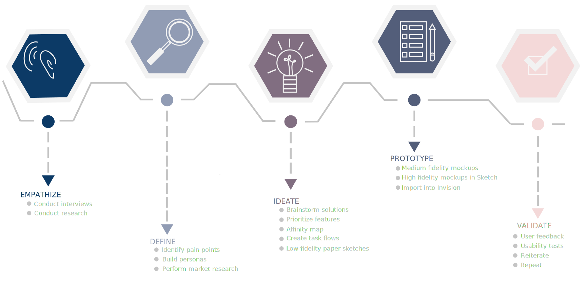
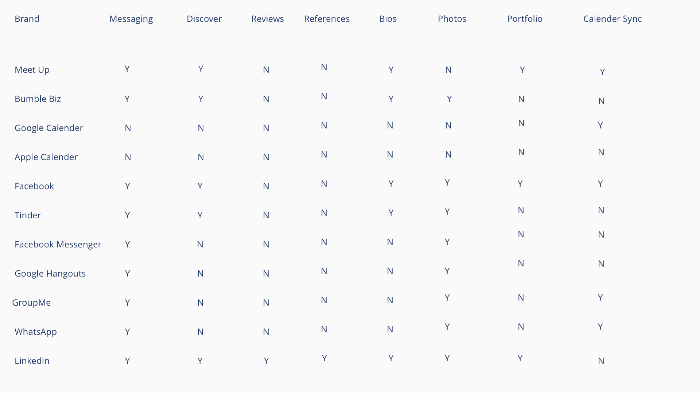
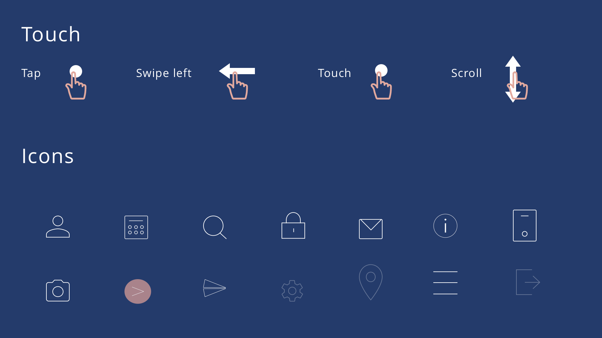

Meet Photo Ready.
objective
The idea behind the Photo Ready project was to find the best way to meet the needs of freelance creative workers. I built out a prototype that collects locations of workers, allow them to “discover” one another, browse each other’s portfolios and references, safely message one another, and find a mutual time to meet through syncing calendar availiability.
View Clickable Prototype (Invision Link)
design process

Before designing the product, I talked to potential users of my app as well as performed market research to see what the leading competitors were doing. I attended an Austin Photography meet up for creatives and models and interviewed anyone who would spend 15 minutes with me.
Once the Interview Questions were completed, I reported some key findings for the app.
- References are requested
- Calender syncing and comparison
- Private chats that protect contact info
- Models provide personal dimensions
By building a few personas, I was able to keep in mind my target audience throughout my entire design process and prioritize features due to user feedback.
competitor analysis

information architecture
low & medium fidelity mockups
A button for global navigation was also created that caused a side tool bar to pop up, providing access to the different screens.
The first step required makings sketches and wireframes to map out user journeys. In the next round I began to implement more detail into the interface, until I eventually built out an entire platform with tools like Invision and Sketch to make a functional prototype.
Click arrow to see lower fidelities.
visual design

high fidelity mockups